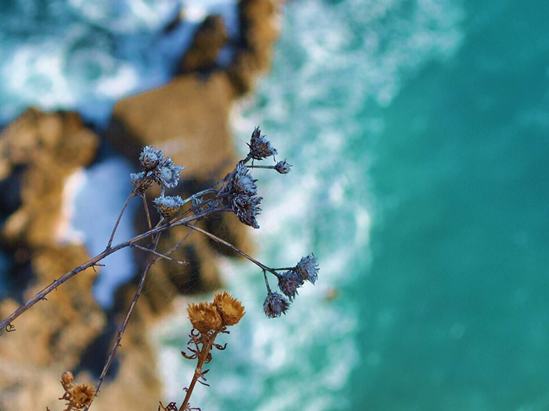

<!DOCTYPE html>
<html>
  <head>
    <meta name="viewport" content="width=device-width, initial-scale=1.0">
    <meta charset="utf-8">
    <title>Villa Paradiso</title>
    <link href="../assets/css/normalize-min.css" rel="stylesheet">
    <link href="../assets/css/styles.css" rel="stylesheet">
    <link href="https://fonts.googleapis.com/css?family=Josefin+Slab|Open+Sans|Pinyon+Script" rel="stylesheet">
  </head>
</html>
<div class="header">
  <h1><a class="logo" href="/index"></a></h1>
  <div class="hamburger-icon">
    <div class="bar"></div>
    <div class="bar"></div>
    <div class="bar"></div>
  </div>
  <ul class="main-nav">
    <li><a href="/fr/rooms">BED AND BREAKFAST</a></li>
    <li> <a href="/fr/surroundings">LES ENVIRONS</a></li>
    <li> <a href="/fr/garden">LE JARDIN</a></li>
    <li> <a href="/fr/prices">TARIFS</a></li>
    <li> <a href="/fr/contact">CONTACT</a></li>
  </ul>
  <ul class="language-picker"><a href="/de/index">
      <li></li></a><a href="/fr/index">
      <li></li></a><a href="/en/index">
      <li> </li></a><a href="/">
      <li></li></a></ul>
</div>
<div class="header-white-fill"></div>
<div class="page-wrapper pages-wrapper">
  <section class="pages-hero-wrapper">
    <div class="page-section-text pages-hero">
      <h2>Autours de la Villa</h2>
      <p>La Villa Paradiso est un excellent point de départ quel que soit vos intérêts. </p>
    </div>
  </section>
  <aside class="surroundings-aside">
    <h2>Lien Local</h2>
    <ul>
      <li><a href="http://societa.verezzi.it/" target="_blank">Antica Società Pizzeria</a></li>
      <li><a href="http://www.festivalverezzi.it/" target="_blank">Festival Teatrale di Borgio Verezzi</a></li>
      <li><a href="http://www.grottediborgio.it/" target="_blank">Grotte di Borgio Verezzi </a></li>
      <li><a href="http://www.comuneborgioverezzi.gov.it/" target="_blank">Comune di Borgio Verezzi</a></li>
      <li><a href="http://turismo.comunefinaleligure.it/en/outdoor" target="_blank">Outdoor Activities in Finale</a></li>
      <li><a href="http://borgioverezzisentieri.altervista.org/" target="_blank">Borgio Verezzi Information</a></li>
    </ul>
  </aside>
  <div class="surroundings-wrapper">
    <section id="sea">
      <h2>Les Envrions</h2>
      <p>la plage, la mer et la plongée, les excursions en bateau sur les traces des dauphins et des baleines, la visite des centres historiques importants comme Gênes ou les mondanités de la principauté de Monaco. Ou, tout simplement, pour faire une promenade dans l’atmosphère romantique de l'ancien village sarrasin de Verezzi et découvrir son prestigieux festival de théâtre estival.</p>
      <p>D’autres trésors se cachent dans les collines environnantes : vous pourrez partir à la découverte du sous-sol et visitez les grottes de Borgio Verezzi, vous aventurez sur les sentiers de randonnée, decouvrir les merveilles de la région en vélo ou en VTT ou encore faire de l’escalade en exterieur ou en gymnase.</p>
      <p>Nous serons heureux de vous conseiller sur toutes ces activités afin de faire de vos vacances une expérience inoubliable.</p>
    </section>
  </div>
  <footer class="body-padding-footer">
    <div class="flex-wrapper">
      <div class="footer-group">
        <h4>Choisissez votre langue</h4>
        <ul class="language-picker-footer"><a href="/de/index">
            <li></li></a><a href="/fr/index">
            <li></li></a><a href="/en/index">
            <li> </li></a><a href="/">
            <li></li></a></ul>
      </div>
      <div class="footer-group">
        <h4>En savoir plus</h4>
        <ul>
          <li><a href="/fr/rooms">BED AND BREAKFAST</a></li>
          <li> <a href="/fr/surroundings">LES ENVIRONS</a></li>
          <li> <a href="/fr/garden">LE JARDIN</a></li>
          <li> <a href="/fr/prices">TARIFS</a></li>
          <li> <a href="/fr/contact">CONTACT</a></li>
        </ul>
      </div>
      <div class="footer-group">
        <h4>Contactez-nous</h4>
        <p>VILLA PARADISO <br> Via N. Sauro, 172 Borgio Verezzi </p>
        <p>Phone: +39 019 610622</p>
        <p>Email: villaparadiso@verezzi.it</p>
      </div>
    </div>
    <div class="copyright">
      <p>&copy 2018 Tous Droits Réservés</p>
    </div>
  </footer>
  <script src="../assets/js/app.js"></script>
</div>